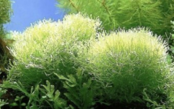
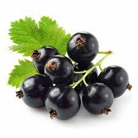
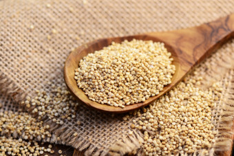
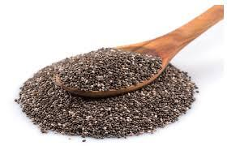
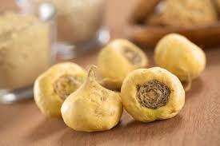

슈퍼푸드란 무엇인가?
대표적인 슈퍼푸드 소개

- 스피루리나
- 스피루리나는 단세포 조류(藻類)로, 고농축 단백질과 다양한 비타민, 미네랄을 포함하고 있어 '완벽한 식품'으로 불리기도 합니다. 특히, 체내에서 쉽게 흡수되는 형태의 단백질을 포함하고 있어 채식주의자나 비건에게 좋은 단백질 공급원이 됩니다. 스피루리나는 면역력 강화, 항염 작용, 에너지 증진에 도움을 줄 수 있습니다.

- 아사이베리
- 브라질 원산지의 아사이베리는 항산화 성분인 안토시아닌이 풍부하여 피부 건강에 좋고 노화 방지에 도움을 줍니다. 아사이베리는 과일 중에서도 항산화 능력이 뛰어난 편에 속하며, 맛도 좋아 스무디나 요거트와 함께 섭취하기 좋습니다.

- 퀴노아
- ‘완전 단백질’로 불리는 퀴노아는 필수 아미노산을 모두 포함한 곡물입니다. 글루텐이 없으면서도 단백질 함유량이 높아, 특히 글루텐 프리 식단을 따르는 사람에게 인기가 많습니다. 퀴노아는 식이섬유와 미네랄도 풍부하여 혈당 안정, 체중 관리에도 도움을 줄 수 있습니다.

- 치아씨드
- 치아씨드는 식물성 오메가-3 지방산, 섬유질, 칼슘이 풍부한 씨앗입니다. 물을 만나면 젤리 같은 형태로 변해 포만감을 주고, 소화기관을 건강하게 유지하는 데 도움을 줍니다. 특히 오메가-3 지방산은 심혈관 건강에 좋고, 뼈 건강을 유지하는 데 도움을 줄 수 있습니다.

- 마카
- 페루 고산지대에서 자라는 마카는 천연 활력 보충제로 널리 알려져 있습니다. 에너지를 증가시키고 피로를 줄여주며, 특히 스트레스 완화와 면역력 강화에 좋다고 알려져 있습니다. 마카는 분말 형태로 판매되며, 스무디나 요거트에 섞어 먹기 좋습니다.
슈퍼푸드를 일상에 쉽게 적용하는 방법
- 아침 식사에 추가하기
- 스무디 볼에 첨가: 아사이베리나 스피루리나, 치아씨드를 스무디 볼에 넣어보세요. 냉동 과일, 아몬드 우유 또는 요거트를 베이스로 스무디를 만들고, 슈퍼푸드 분말을 살짝 추가해 믹서에 갈아주면 아침에 손쉽게 에너지를 충전할 수 있는 스무디가 완성됩니다.
- 점심과 저녁 식사에 슈퍼푸드 더하기
- 샐러드 토핑: 신선한 채소 샐러드에 퀴노아나 햄프씨드를 더하면 한 끼 식사로도 충분한 단백질과 식이섬유를 보충할 수 있습니다. 퀴노아는 미리 삶아 준비해두면 샐러드에 곁들이기 좋고, 바쁜 날에도 손쉽게 사용할 수 있습니다.
- 간식으로 활용하기
- 요거트 볼: 요거트 위에 치아씨드, 아사이베리 분말, 베리류 과일을 추가하면 간단하면서도 영양이 풍부한 간식이 됩니다. 항산화 효과가 뛰어난 블루베리나 라즈베리를 곁들이면 시각적으로도 아름답고 건강에도 유익합니다.
- 음료와 간단한 디저트로 활용하기
- 슈퍼푸드 차와 주스: 스피루리나, 마카, 아사이베리 분말 등을 물이나 주스에 섞어 손쉽게 건강 음료를 만들 수 있습니다. 특히 스피루리나 분말을 물에 타서 마시면 피부와 면역력에 좋은 효과를 볼 수 있습니다.